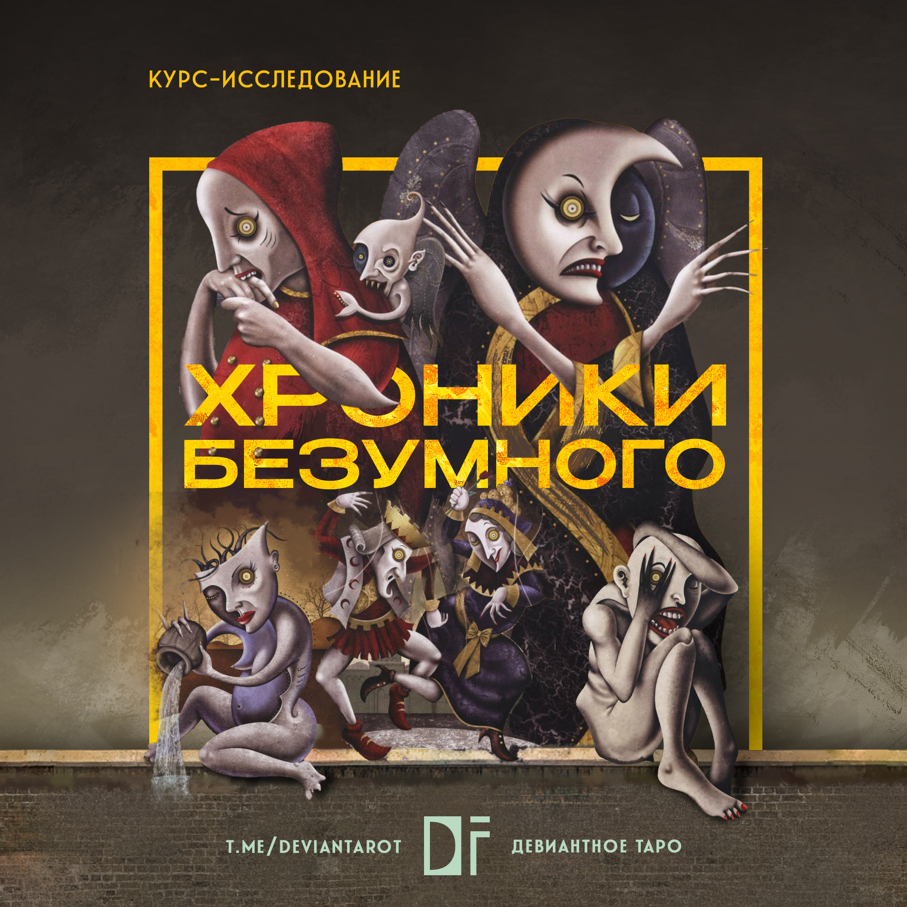
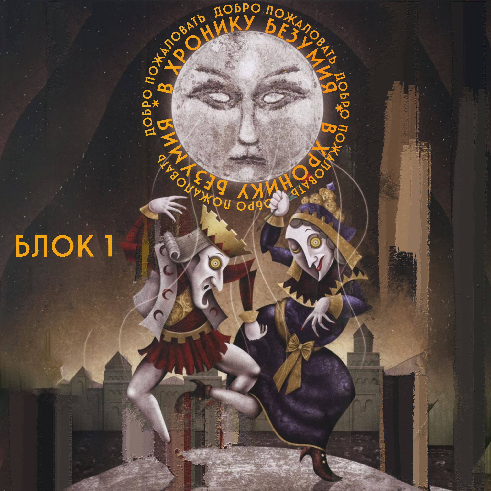
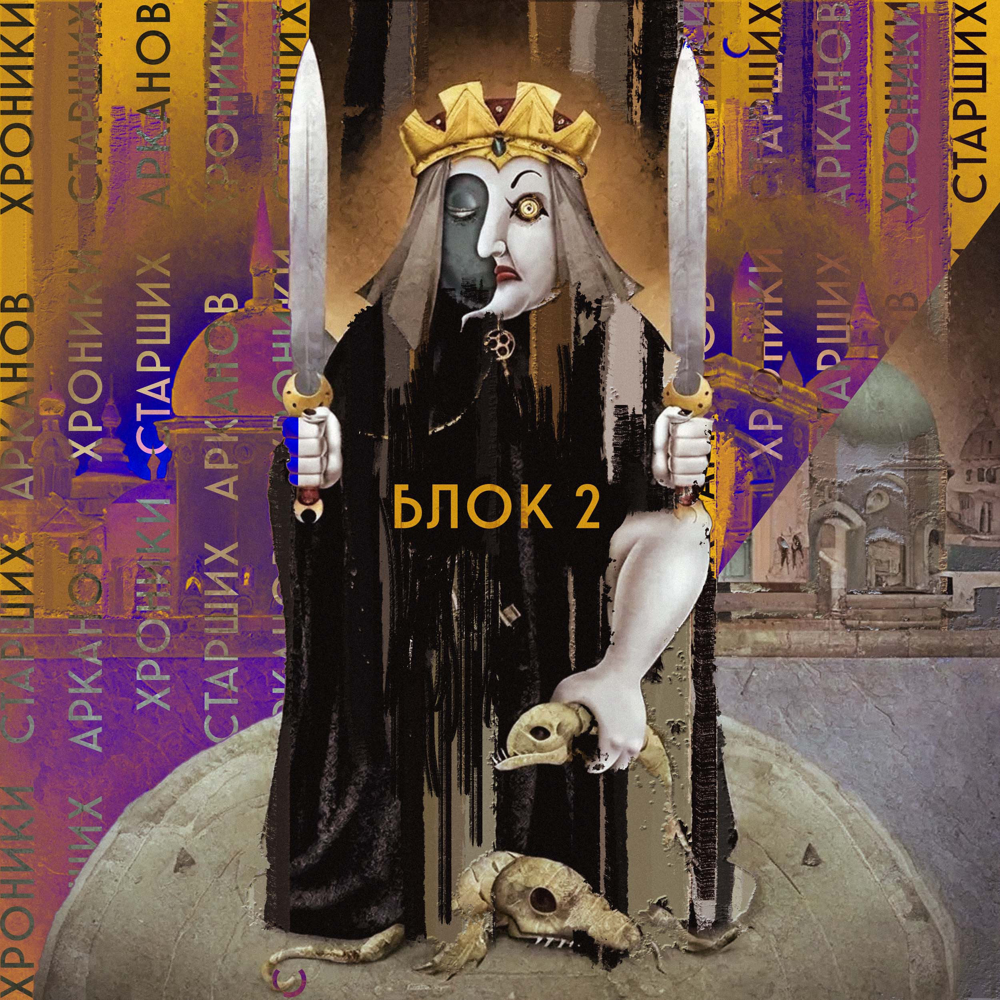
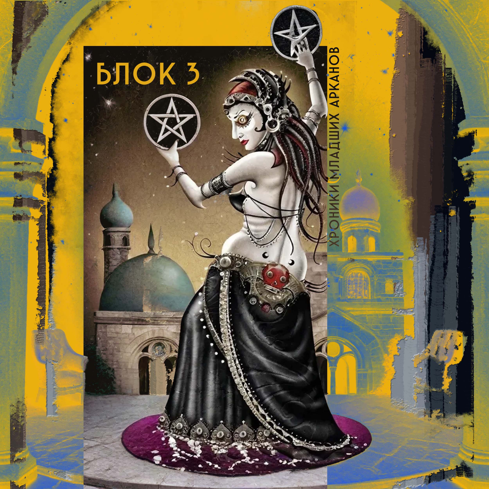
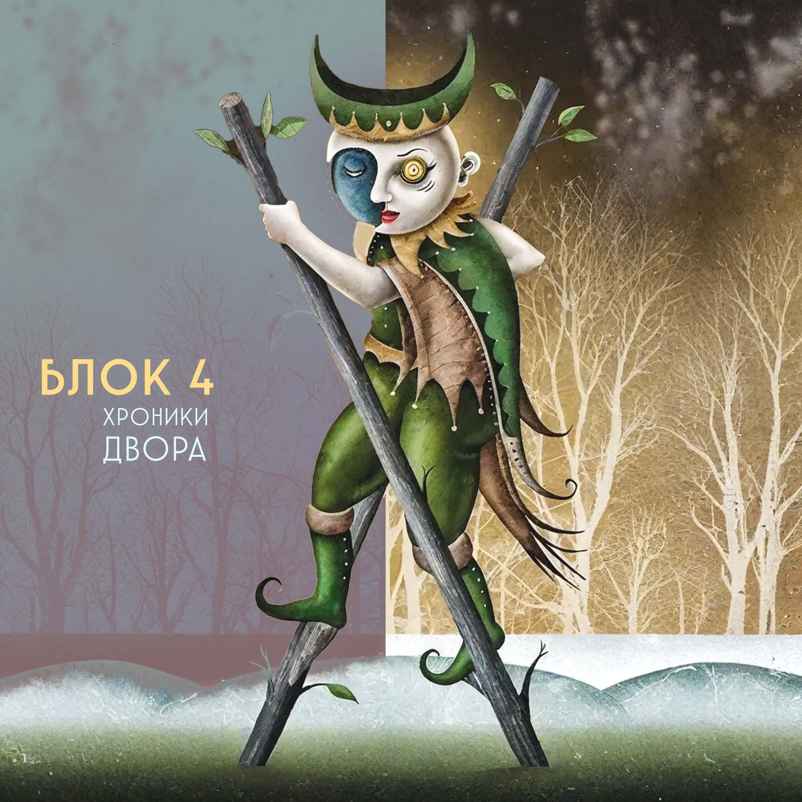
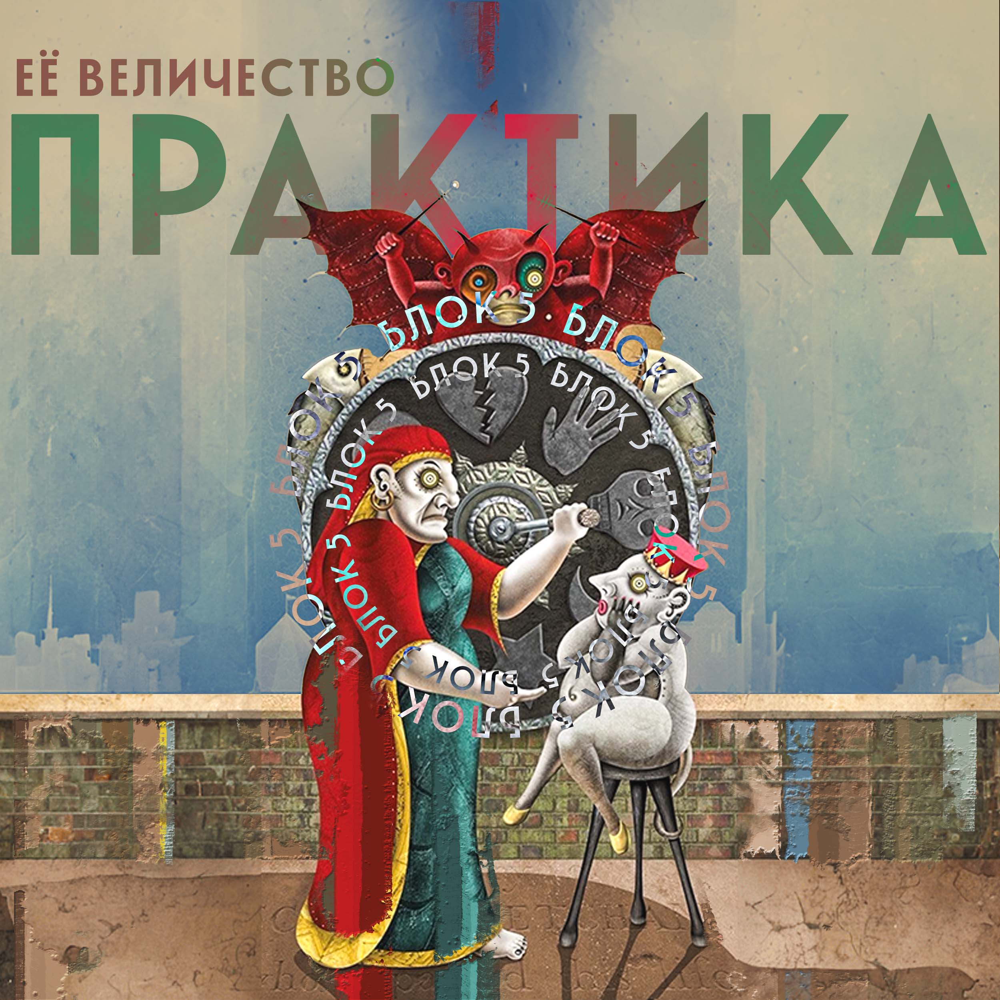

Таро Безумной Луны – колода, которая не оставляет никого равнодушным: ведь она предлагает столкнуться с собой настоящим и либо пугает, либо вызывает безумный интерес. Колода, которая является вершиной творения художника Патрика Валенцы и создавалась на протяжении более чем 30 лет. В ее символике скрыты глубины человеческого бессознательного: она приоткрывает дверь к нашим подсознательным страхам, травмам и желаниям – тому самому незримому, что порой сокрыто от нашего сознания, но является истинной причиной проблем.
Хочу предложить безумство, если...
Устали от поверхностных трактовок карт Таро в раскладе
Хотите видеть то, что стоит за запросом Ваших клиентов: не боитесь видеть их травмы и «прописанные» когнитивные установки
Желаете ловко считывать причинно-следственные связи между проблемами клиентов и подсознанием
Стремитесь превратить обычное «чтение расклада» в глубокую психологическую консультацию
Ищете уникальный инструмент, который поможет Вам узнать самого себя и окружающих
Мечтаете найти путь решения глубинных проблем
…то уникальное обучение по Таро Безумной Луны возвращается! Еще больше безумия, еще больше психологии!
О курсе
Я приглашаю вас в курс-погружение «Хроники Безумной Луны», воплощающий девиантный формат обучения: исследуя слои символизма мы не только превращаемся в тарологов, которые видят своих клиентов «как на ладони» и дают им тончайшие рекомендации, но и исцеляем себя, заглядывая в бездну своих собственных тайн и страхов, попутно решая свои психологические проблемы. Дешевле и порой действеннее психотерапии!
Курс универсален и подходит как новичкам, которые только взяли карты в руки, так и профессионалам. Главное лишь Ваше желание использовать Таро как психологический инструмент и стремление «закопаться» в процессе консультации и вывести проблему как она есть из самых глубин бессознательного.
Что Вас ждет на курсе:
Психологический подход
Уникальный психологический подход к чтению арканов: анализ карт без лишней эзотерики, но с использованием символизма общеизвестных психологических школ: аналитическая психология Юнга, психоанализ Фрейда, теория психосоциального развития Эриксона, цветовая диагностика Люшера и др. Да, карты Таро содержат все это и Таро Безумной Луны более всего
Практика и исследование
Практические задания на протяжении всего курса, направленные как на отработку раскладов на этой безумной колоде, так и на исследование себя и работы своего личного бессознательного с символизмом карт, что позволит Вам дополнить знания, полученные из курса собственными уникальными наработками
Подача материала
Юмор и легкость в донесении материала: никаких занудств в лекциях все максимально доступно и интересно, ведь мы — исследователи!
Сообщество
Безумный чатик, где вы сможете найти себе товарищей по духу и перекидываться даже мемами
Почему именно этот курс?
Таро Безумной Луны – колода, которая не оставляет никого равнодушным: ведь она предлагает столкнуться с собой настоящим и либо пугает, либо вызывает безумный интерес. Колода, которая является вершиной творения художника Патрика Валенцы и создавалась на протяжении более чем 30 лет.
В ее символике скрыты глубины человеческого бессознательного: она приоткрывает дверь к нашим подсознательным страхам, травмам и желаниям – тому самому незримому, что порой сокрыто от нашего сознания, но является истинной причиной проблем.
Программа курса

- история колоды: личность Патрика Валенцы, процесс создания карт и то, как это влияет на значение арканов и трактовку раскладов;
- мир Безумной Луны: анализ основных авансцен арканов и их символизм в психике человека;
- роль Луны и ее фаз в колоде;
- авторская теория "зеркала" в чтении арканов;
- двуликий Янус: понятие Персоны и Тени в аналитической психологии Юнга и их влияние в арканах, понятие Анимы и Анимуса;
- анализ основных цветов колоды с точки зрения психофизического состояния человека, психологическое значение цвета.
В результате блока Вы:
- узнаете историю создания Таро Безумной Луны;
- исходя из истории поймете с какими сферами колода работает лучше всего;
- узнаете о методе прогнозирования при помощи ТБЛ и значение основных символов колоды;
- уже сможете читать расклады на ТБЛ, основываясь на первых полученных знаниях.

Подробный анализ 22 Старших Арканов с точки зрения:
- основных девиаций;
- истории создания аркана и значения в психике Патрика Валенцы;
- глубинной травматики человека;
- тайных желаний и скрытых мотиваций человека;
- шаблонов поведения;
- причины возникновения текущих проблем;
- ключей решения проблем и исцеления травмы;
- психологического портрета;

Анализ 40 числовых арканов, в том числе:
- системные значения Младших Арканов Таро;
- базовые инстинкты человека и их роль в каждой масти;
- паттерны поведения и копинг-стратегии преодоления стресса, сокрытые в арканах;
- мотивация к действию внутри каждого числового аркана;
- способы решения материальных и психологических проблем.

конкретные значимые фигуры, сокрытые в арканах:
- патологические формы воспитания и их влияние на дальнейшее поведение человека;
- психологические типы Придворных арканов в Безумной Луне;
- ресурс для излечения травмы.
В результате этих теоретических блоков Вы:

- методы работы с ТБЛ вне раскладов;
- авторские расклады и особенности их чтения;
- практика и реальные примеры чтения раскладов на Таро Безумной Луны.
В результате блока Вы:
- пополните свою копилку интересными психологическими раскладами;
- отработаете методику «дегтя» в работе с ТБЛ как колодой-компаньоном;
- узнаете новые способы работы с Таро;
- попробуете сами читать расклады и получите обратную связь.
В конце каждого блока нас будет ждать прямой эфир с обсуждением и ответами на вопросы (по необходимости).
Формат обучения
Видеоуроки
В записи, 50 мин в среднем
Конспекты
PDF-файлы к урокам
Сертификат
В конце курса
Стоимость и условия
Рекомендую ознакомиться с двухчасовым вебинаром, который посвящен разбору тем, с которыми Таро Безумной Луны работает наиболее эффективно. Пример чтения авторского расклада "Страдание", направленный на анализ негативных переживаний.
Обсуждаем один из самых мистических символов в Таро Безумной Луны - значение Луны в арканах колоды, роль фазы Луны при трактовке раскладов, а также в каких случаях стоит уделить ей внимание, а когда....просто не выносить себе мозг.
Также рекомендую к просмотру запись доклада с конференции "Таро на блюдечке", приуроченной ко Дню Таролога от Аввалон Ло Скарабео, посвященного символизму клетчатого пола в Таро Безумной Луны